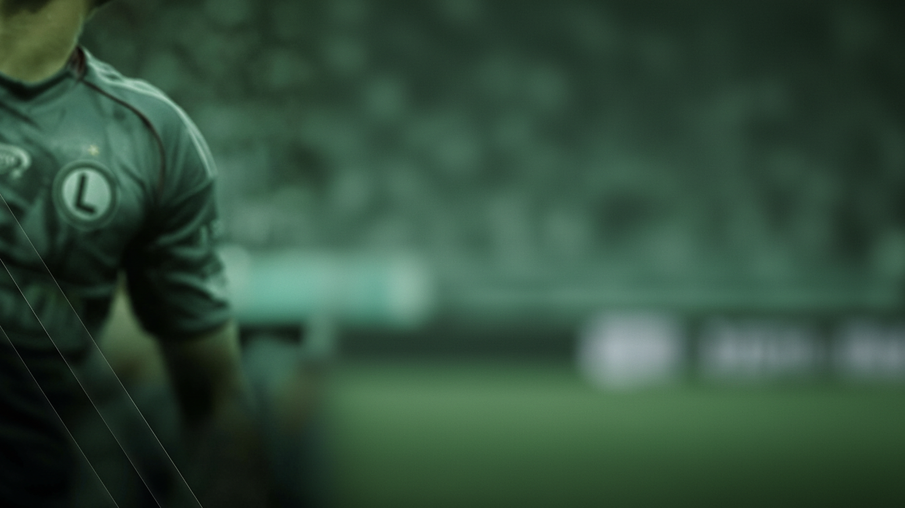

- {{faktyHtml}}
Co obejmuje ten zakres
Plan układamy pod to, z czym przychodzisz. Nie musisz korzystać ze wszystkiego.
{{zakresHtml}}
{{cytat}}
{{opisHtml}}

Zacznij od rozmowy z koordynatorem
Piętnaście minut wystarczy, żeby ustalić, czego potrzebujesz. Bez skierowania i bez kolejki.
- Telefon
- 22 318 20 00
- info@legia.pl
- Godziny
- Pon.–pt. 8:00–20:00
- Adres
- ul. Łazienkowska 3, Warszawa
Pozostałe zakresy opieki
{{inneHtml}}